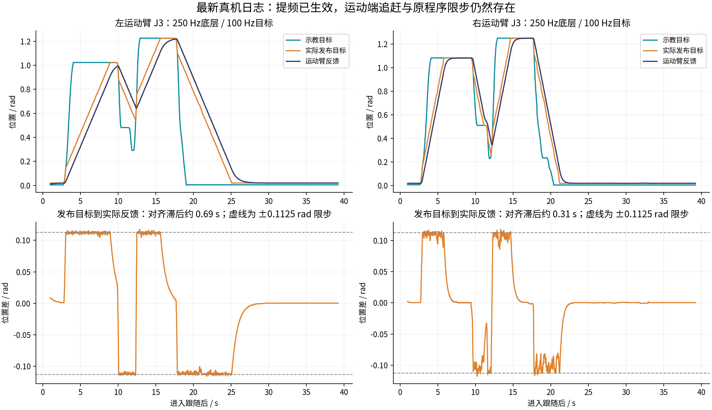

最新会话：teaching_769d352988，2026-11-25 20:28，真机跟随约39.22秒，正常回零退出。
四臂每轴命令和反馈的累计计数都约250 Hz；采样覆盖约38.9秒内没有新增超过6 ms的底层周期。上位机目标观测平均99.38 Hz。现有证据不支持继续提频作为主要解决手段。
| 关节 | 125 Hz底层 / 100 Hz目标 | 250 Hz底层 / 100 Hz目标 |
|---|---|---|
| 右臂 J2 | 0.32 s | 0.31 s |
| 右臂 J3 | 0.33 s | 0.31 s |
| 左臂 J4 | 0.17 s | 0.17 s |
这里是发布目标到实际反馈的运动段最佳平移对齐量，两次动作不同，不能作为严格A/B试验。最新左臂J2/J3分别约0.68/0.69秒，右臂约0.31秒，左右差异也值得在电机参数中核对。

原版程序仍以运动臂当前位置为中心限步：前三轴 min(0.35, 7.5 / 100 × 1.5) = 0.1125 rad。最新右臂J3在跟随后约12.87秒：示教目标1.232、发布目标0.656、实际反馈0.540 rad。约0.692 rad总差中，约0.576 rad位于示教目标→发布目标，约0.116 rad位于发布目标→实际反馈。
最新左臂J2/J3反馈速度P95约0.164/0.168 rad/s，右臂约0.339/0.339 rad/s。相同目标超前量下，运动端响应偏慢会使限步后的目标持续跟着实际位置慢慢推进；这不能只归因于通信，也不能直接认定为某个PID参数。
下一步维持本次频率，先核对运动臂当前位置环/速度环增益、速度与加减速约束，再围绕J2/J3做单轴受控响应记录。本轮未修改程序、频率、电机参数，未连接实体串口。
原始记录、方法与限制见 analysis.json / provenance.json / analyze.py。主机发送计数不是CAN ACK，读写调用耗时不是线上的端到端延迟；raw/safe/反馈为异步观测。